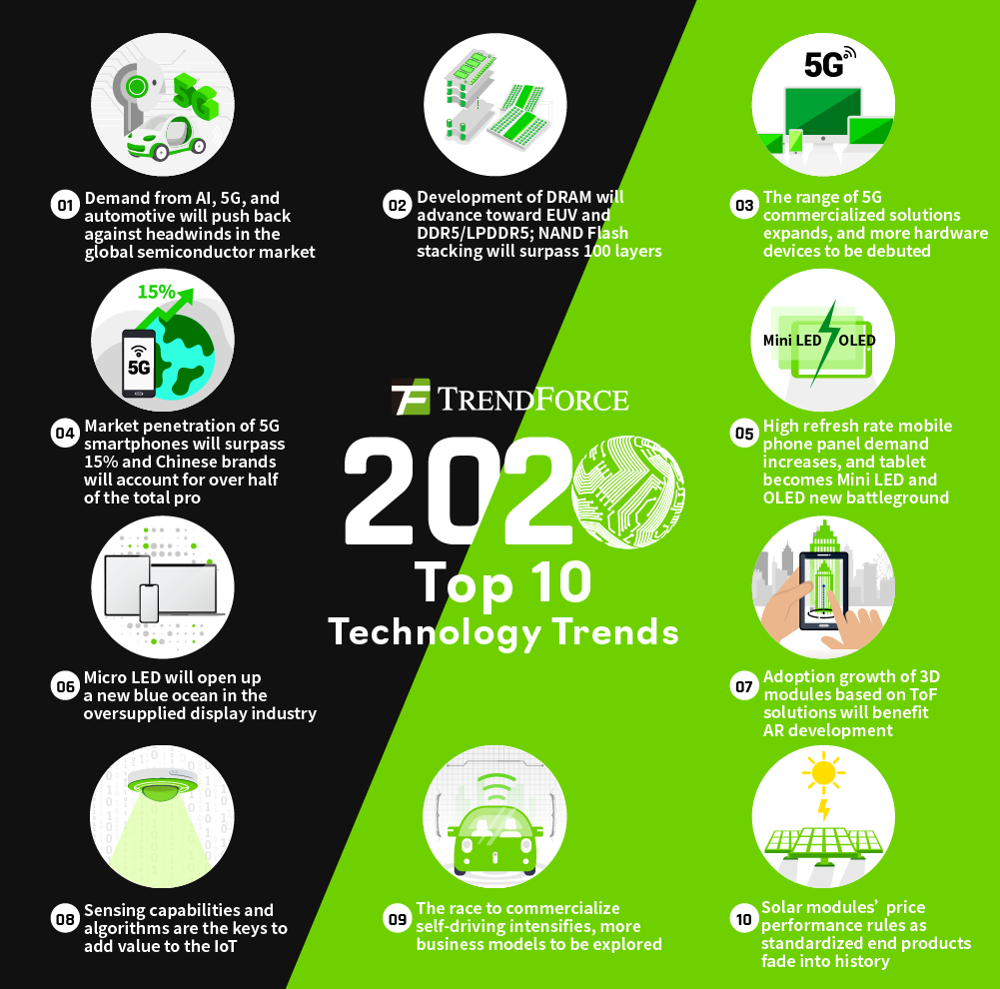
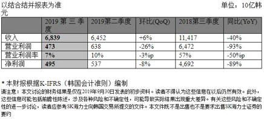
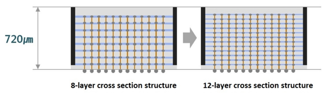
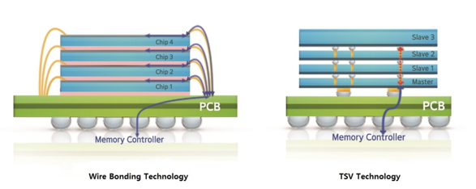
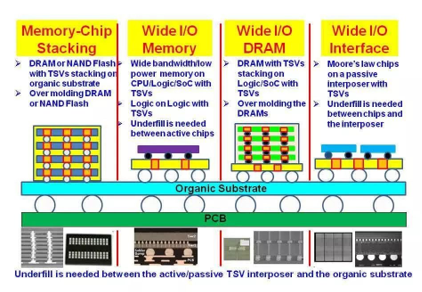
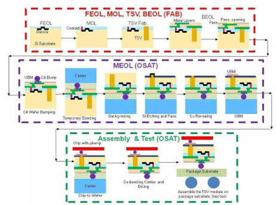

Breaking News
1. 未达成一致 日韩就半导体出口管制问题将再次磋商(2019-10-14)
10月11日，日韩两国在WTO总部瑞士日内瓦围绕该问题举行了双边磋商，从磋商结果来看，双方并未谈妥，但双方同意进行进一步磋商。据韩联社报道，下一次磋商预计在11月10日前进行。
9月11日，韩国政府就日本限制对韩出口一事向世界贸易组织提起申诉。
…………
而在此次磋商过程中，韩方首席代表、产业通商资源部新通商秩序合作官丁海官表示，韩方在会上阐明日方将对韩出口高纯度氟化氢、氟聚酰亚胺、光致抗蚀剂的一揽子许可改为个别许可违背世贸组织协定。
丁海官表示，虽然很难预断能否通过进一步磋商达成协议，但协商解决好过走裁决程序，因而向日方提议再次磋商。若在充分磋商后仍无法达成一致，韩方将要求世贸组织设立专家组就此展开调查。
日方首席代表、日本经济产业省通商机构部长黑田淳一郎则表示，韩方向世贸组织提起申诉是韩方出于政治目的不当做法。限制出口是出于对韩方出口管理体系薄弱的忧虑，并没有针对韩国大法院对二战韩国籍劳工索赔案的判决结果。
2. Korea, Japan end 1st round of talks on trade row, agree to meet again** (koreaherald 2019-10-12)
Korea and Japan on Friday ended their first round of talks on a bilateral trade dispute with an agreement to meet again for further consultations.
The two sides met in Geneva to discuss South Korea’s complaint with the World Trade Organization over Japan’s export controls against the South.
“We agreed that further consultations are necessary, and decided to schedule a second round of bilateral talks through diplomatic channels,” Chung Hae-kwan, the chief South Korean delegate to the talks, told reporters.
Seoul’s complaint accuses Tokyo of violating a set of international trade rules, including Article 11 of the General Agreement on Tariffs and Trade (GATT),which bans regulations on export volumes unless the products have a serious impact on national security.
South Korea also claims that Japan has violated the Agreement on Trade-Related Aspects of Intellectual Property Rights (TRIPS), and Trade Related Investment Measures (TRIMS).
…………
Market Trends
1. TrendForce Announces Top 10 Trends in Information and Communication Technology Industry for 2020(TrendForce 2019-10-02)
In this press release, TrendForce provides predictions of the information and communication technology industry for 2020, focusing on 10 key themes.
Demand from AI, 5G, and automotive will push back against headwinds in the global semiconductor market
…………
Development of DRAM will advance toward EUV and DDR5/LPDDR5; NAND Flash stacking will surpass 100 layers
…………
Therange of 5G commercialized solutions expands, and more hardware devices to be debuted
…………*
Market penetration of 5G smartphones will surpass 15%, and Chinese brands will account for more than half of the total pro
…………

2. 南亚科李培英：DRAM第四季供需平衡 明年好转 (TechNews科技新报 2019-10-09)
中国台湾存储器厂南亚科8日举行第3季法人说明会，并公布2019年第3季营收状况。受到DRAM价格持续在低档震荡的影响，第3季营收147.99亿元（新台币，下同），较第2季增加19%，净利22.05亿元，则较第2季减少19.8%，为近3年的单季新低。
…………
而就第4季的整体情况分析，李培瑛指出，总体经济不确定性仍将持续。而在第3季旺季效应在出货量上扬，库存降低的情况下，加上云端服务器需求逐渐增加，手机新机搭载量成长，个人电脑出货量下半年优于上半年，消费型电子产品需求稳定，这使得预期第4季DRAM供需平稳，价格持平或小幅涨跌。
另外，李培瑛还强调，因为大厂的库存消化已达健康水位，且至少还有两家厂商酝酿价格反弹，加上2020年在厂商的资本支出方面又偏保守，预计2020年市况一定会反转，只是时间点仍待进一步观察。
3. 2020年科技产业大预测：半导体产业和存储器市场将如何发展？(拓墣产业研究院 2019-10-18)
全球市场研究机构集邦咨询今日（18日）于台大医院国际会议中心，举办「2020年集邦拓墣科技产业大预测」。本次研讨会精彩内容节录如下：
2019年半导体产业出现10年来最大衰退，产值估计年减约13%。从IC设计、晶圆代工与OSAT三大面向观察，晶圆代工受惠于7纳米制程技术发展与相关产品加速导入市场，较能抵抗产业逆风带来的负面冲击。
展望2020年，在5G AI车用等需求持续增加与新兴终端应用的帮助下，半导体产业将逐渐走出谷底。
…………
而中国台湾地区晶圆代工与OSAT产业之全球占比超过5成，IC设计产业则位居全球第二，预期在产业复苏与终端应用日渐多元的趋势下，台湾地区厂商有望掌握先机，进一步巩固在全球半导体产业的地位。
…………
Vendor News
1. 中国首颗自主研发DRAM芯片年底量产，长鑫存储传拟扩产一倍应战 (DeepTech深科技 2019-10-08)
2019 年是中国“存储元年”，在长江存储 64 层 3D NAND 芯片宣布量产后，成功填补国内闪存技术的空白。另一家专攻DRAM的存储大厂合肥长鑫也将在年底生产首颗8Gb DDR4芯片，将会是中国第一颗自主研发的DRAM内存芯片。
国内存储技术无论是 NAND Flash 或 DRAM 都是从零开始研发，努力了 3 ~ 4 年后，陆续打破零自制的现状，是一个很重要开始。
合肥长鑫成立于 2016 年，以4个月的速度完成12寸晶圆厂房，年中已完成1.5万片的测试晶圆，目前19nm工艺技术的良率如期且顺利，非常有机会在年底开始生产8Gb DDR4芯片，第一个应用领域会是计算机。
长鑫已经准备2万片产能应战，待年底试产成功后要启动大量生产。
同时，业界也传出长鑫存储对于目前技术非常有信心，考虑扩增一倍月产能规模至4万片，让机台设备的采购能一次到位，进入规模战的第一个门槛。
…………
2. 安徽合肥长鑫存储实现我国内存芯片量产技术突破 (新华视点 2019-10-23)
近期，总投资约1500亿元、位于合肥的长鑫存储内存芯片自主制造项目宣布投产，与国际主流DRAM产品同步的10纳米级第一代8Gb DDR4首度亮相，一期设计产能每月12万片晶圆。这标志我国在内存芯片领域实现量产技术突破，拥有了这一关键战略性元器件的自主产能。
3.SK hynix develops 3rd Gen. 10-nm memory chips(SK hynix 2019-10-21)
SK hynix, the world’s second-largest memory chip provider, announced Monday it has completed development of the third generation of DDR4 DRAM with the industry’s highest density and power efficiency, along with a plan to start mass production next year.
The Korean chipmaker has developed a 16-gigabit DDR4 on 10-nanometer technology process, known as 1Z-nm, with productivity improved from the previous 1Y-nm generation by 27 percent.
…………
SK hynix completed the development without expensive extreme ultraviolet lithography equipment, which raised the competitiveness of the most sophisticated memory product cost-wise, it underlined.
The new 1Z-nm DRAM supports a data transfer rate of up to 3,200 megabits per second, featuring the highest speed for data processing in a DDR4 interface, while reducing power consumption by 40 percent compared to modules of the same density made with 1Y-nm 8-gigabit DRAM.
…………
4. SK海力士公布最新财报DRAM和NAND Flash各自表现如何？(SK海力士 2019-10-24)
10月24日 – SK海力士今日宣布截止2019年9月30日的2019年第三季度财务报告。第三季度结合并收入为6.84万亿韩元，营业利润为4726亿韩元，净利润为4955亿韩元。本季度的营业利润率为7%，净利润率为7%。
第三季度，由于出现恢复需求的动向，收入环比增长6%，但在收益性方面，尽管DRAM的单位成本降低，但市场价格下降幅度却没有完全抵消，营业利润环比下降26%。
对于DRAM，公司积极响应移动新产品，并随着一些数据中心客户的购买量也所增加，DRAM比特出货量bit shipments)环比增加23%，但价格持续疲软，平均销售价下降了16%。但是，平均销售价下降幅度比上一季度有所减少。
对于NAND闪存，公司积极应对持续需求复苏的高容量移动和SSD等解决方案市场，但由于公司减少上一季度暂时增加的单品销售，导致比特出货量环比下降1%。但由于减少了价格相对较低的单品销售比重，平均销售价格环比增长了4%。
…………

5. DDR5开辟DRAM市场新天地 (SK hynix 2019-10-29)
SK海力士所研发的行业内首个五代双倍速率DDR5) DRAM, 达到了电子工程设计发展联合协会Joint Electron Device Engineering Council,简称JEDEC)标准,这项技术正在DRAM市场开拓一片新天地。
DDR5具备超高速、低功耗和大容量特性,将成为大数据(Big Data),人工智能AI)和机器学习(Machine Learning)等新一代系统理想的DRAM。*
继1Y纳米工艺的8Gbit(Gb)DDR4之后, SK海力士于2018年11月面向各大主要芯片组制造商, 推出与DDR4 采用相同微细 化工艺的16Gb DDR5 。新一代DDR5 DRAM支持5200Mbps的数据传输速率,比上一代3200Mbps的数据传输速率快了60%左右。 同样在今年2月,在美国旧金山举行的2019国际固态电路会议(the International Solid-State Circuits Conference 2019,简称ISSCC)上, SK海力士详细介绍了16Gb DDR5,表示该产品技术上支持的数据传输速率高达6400Mbps。
与上一代产品DDR4相比, DDR5不仅在功耗上降低了30%,数据传输速率还提升了60%, DDR5支持41.6GByte/秒的数据传输速率, 相当于一秒内能处理11部全高清(Full-HD)电影的容量。
…………
6. Samsung Electronics Develops Industry’s First 12-Layer 3D-TSV Chip Packaging Technology(Samsung 2019-10-07)
Samsung Electronics, a world leader in advanced semiconductor technology, today announced that it has developed the industry’s first 12-layer 3D-TSV (Through Silicon Via) technology.
Samsung’s new innovation is considered one of the most challenging packaging technologies for mass production of high-performance chips, as it requires pinpoint accuracy to vertically interconnect 12 DRAM chips through a three-dimensional configuration of more than 60,000 TSV holes, each of which is one-twentieth the thickness of a single strand of human hair.
…………
Relying on its 12-layer 3D-TSV technology, Samsung will offer the highest DRAM performance for applications that are data-intensive and extremely high-speed.
Also, by increasing the number of stacked layers from eight to 12, Samsung will soon be able to mass produce 24-gigabyte (GB)\ High Bandwidth Memory*, which provides three times the capacity of 8GB high bandwidth memory on the market today.
…………


7. 存储器价格下滑，三星预估2019第三季利润砍半 (TechNews科技新报 2019-10-09)
由于 2019 年的存储器需求不如去年，韩国科技大厂三星（Samsung）预估第三季的利润不到2018年同期的一半。
三星预测第三财季的营收为62万亿韩元，利润则达到7.7万亿韩元。与2018年同期相比，营收下滑5.3%，利润更是大跌56%。营收和利润的下滑并非第三财季才出现的现象，三星在第二季的利润就下跌了大约一半，当时也提出警告指出未来的不确定性将会持续存在。
会有这么巨大的落差，另一个原因在于三星在2018年第三季的单季利润创下历史新高，才会让 2019 年的成绩单看起来黯然失色。2018 年第三季的惊人表现主要归功于存储器芯片的需求激增，但从同年第四季之后存储器的需求和价格崩跌，至今再起不能。
不过第三季也不是完全一无是处，营收比上一季增加了10.5%，利润更成长了 16.7%，这些成长动能可能来自于 8 月所推出的旗舰机种 Galaxy Note 10。三星的行动业务第二季利润达到 1.56 万亿韩元，而韩国分析师预估 Galaxy Note 10 将帮助第三季的利润增加到 2 万亿韩元。
…………
8.Micron Finally Announces A 3D XPoint Product: Micron X100 NVMe SSD (ANANDTECH 2019-10-24 )
Micron and Intel co-developed 3D XPoint memory as a high-performance alternative to flash, but so far only Intel has brought products to market, under their Optane brand. Despite owning the fab where 3D XPoint memory is produced, the closest Micron has come to commercializing that tech for themselves was their announcement in 2016 that upcoming Micron products using 3D XPoint memory would be branded as Micron QuantX, their counterpart to Intel’s Optane brand. Years later, we finally have a concrete product announcement, and they seem to have abandoned the QuantX name.
The new Micron X100 is a high-end enterprise NVMe SSD to compete against Intel’s upcoming second-generation Optane SSDs and any specialized low-latency SLC NAND their competitors can come up with (eg. Samsung Z-NAND, Toshiba XL-FLASH). Micron has not yet released full specs for the X100, but the top line performance numbers are 2.5M IOPS for 4kB random reads and around 10GB/s for sequential transfers—both likely to be new records for a single SSD if they can ship it soon enough.
…………
New Technology
1. Why We Need Next Gen DRAM？ (全球半导体观察 2019-10-16)
内存是计算机和移动智能终端的重要组成部分，经历了长时间的竞争更替和路线选择之后，DRAM技术被稳定在以DDR技术为基础的发展路线上。从DDR到DDR2、DDR3，今天市面上比较普及的DRAM技术规格是DDR4/LPDDR4。
资料显示，相比现有产品，除了外形变化不大之外，DDR5带来了更高的带宽、更大的容量和更出色的安全性。
从原理上来看DDR5是一种高速动态随机存储器，由于其DDR的性质，依旧可以在系统时钟的上升沿和下降沿同时进行数据传输。和DDR4一样DDR5在内部设计了Bank（数据块）和Bank Group（数据组）。
和DDR4相比DDR5在数据块和数据组的配置上更为宽裕。
除了数据组翻倍外，在预取值、减少总线压力、PDA模式、类双通道等多方面都有不同程度的创新或重新设计，这为DDR5实现更高带宽、更快速度和更好安全性打下基础。
得益于最新的技术，DDR5有可能带来单片32Gb的DDR5颗粒，这样单内存条支持的内存容量有可能提升至64~128GB。而规格上，目前DDR5的内存规格从DDR5 3200起跳，最高可到DDR5 6400。
…………
下面是各大厂商DDR5相关产品进展：
…………
2. 一文看懂3D TSV (半导体行业观察 2019-10-28)
当前，3D封装技术正席卷半导体行业，引起整个行业的广泛关注。如今摩尔定律趋缓，而3D封装技术将会取而代之成为新的发展方向。因此各家公司一直在大力投资3D封装技术，以便占据良好的竞争优势。
图1展示了3D封装技术的潜在应用和大批量制造（HVM）。基本上它可以分为4类：存储芯片堆叠，宽 I / O储存芯片（或逻辑芯片堆叠），宽I / O DRAM和宽 I / O接口（或2.5D集成电路）。
…………
在TSV时代之前的技术流程已经被很好地定义和理解。TSV时代之前技术流程描述如下：
FEOL(前段）。这是IC制造的第一部分，其中对各个器件（例如晶体管或电阻器）进行了图形化。该过程是从裸晶片到（但不包括）金属层的沉积。FEOL通常在fab中进行。
BEOL(后段）。这是有源器件在晶片上布线连接的制造过程。该过程从第一层金属开始到具有钝化的PAD。它还包括绝缘体和金属接触，称为MOL（中段）。术语“MOL”很少使用，此工艺常包含在BEOL中。同样，BEOL通常在fab中完成。
OSAT（外包半导体组装和测试）。当钝化后的晶片从fab接收后，将进行电路测试/凸点/减薄/划片/引线键合/倒装芯片/注塑成型/植球/成品测试。
…………

